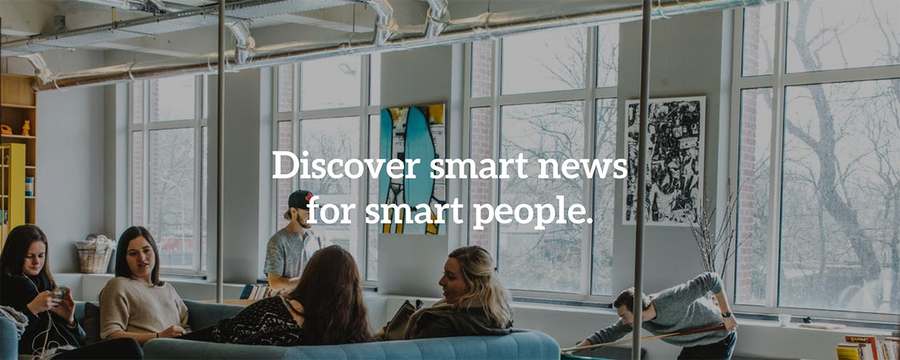
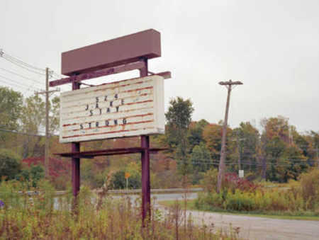
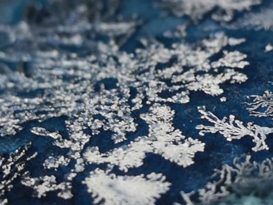
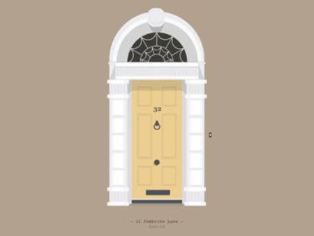

Maxime Jacquet
Maxime Jacquet

Latest news

Stranger Things 2 Amazing New Posters
La deuxième saison de Stranger Things approche à grands pas. Netflix dévoile donc...
20 likes 10 comments

65 likes 22 comments
Beautiful Series Accross The USA
Le photographe Akos Major armé de son Mamiya7, chargé de pellicules Kodak Portra 400...
65 likes 22 comments

30 likes 15 comments
Game Of Thrones Crystal Made Artwork by Dries Ketels
Dans cette série de tableaux, l'artiste Dries Ketels se penche sur la célèbre...
30 likes 15 comments

16 likes 10 comments
Colorful Doors of Dublin Illustrations
Passionné par l’art et le design, Al Power est un illustrateur irlandais installé à...
16 likes 10 comments

Alexander Semenov Expedition to Shoot...
Alexander Semenov est un photographe marin et biologiste qui est en train de conduire...
32 likes 14 comments

Ghostly Floating Installation by Edoardo...
Edoardo Tresoldi explore le concept de « fantôme » à travers ses incroyables...
25 likes comments
load more